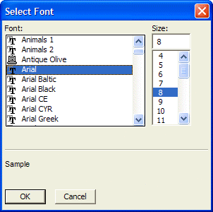

Select Font Dialog Box
Optionally, select a font from the Font list.
Optionally, select a point size from the Size list or enter an integer value in the Size text box.
Click OK to save your continue or click Cancel to discard your selections.

Supported By
Alpha Five Version 5 and Above